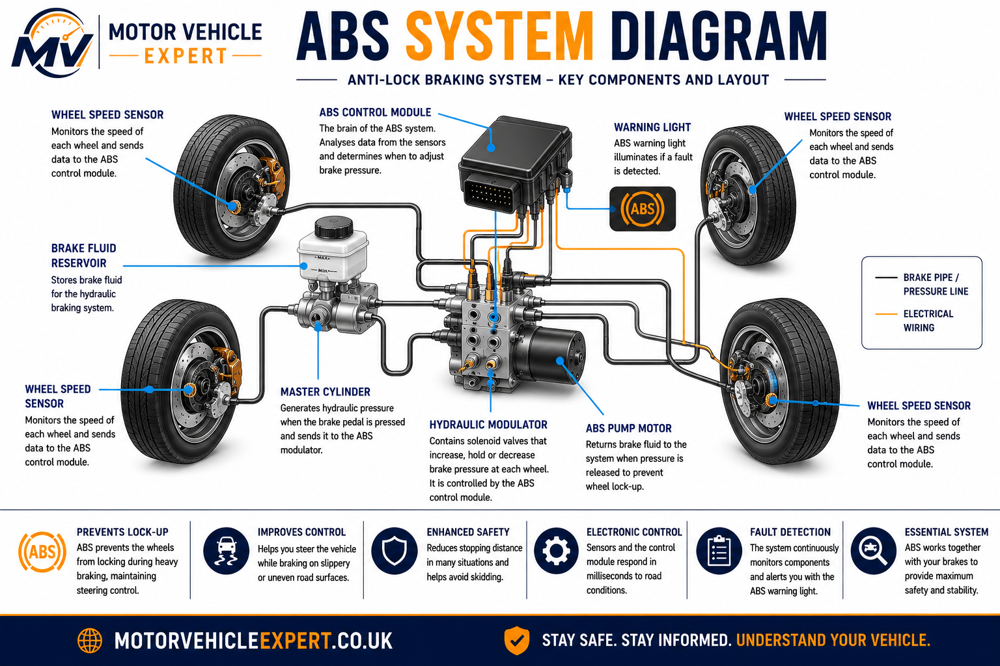
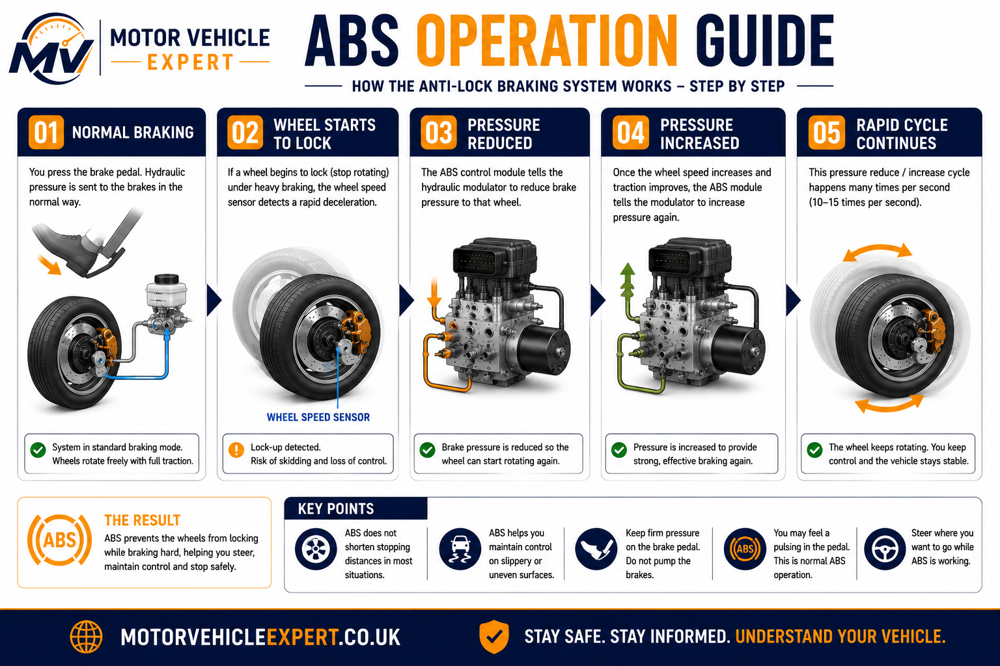
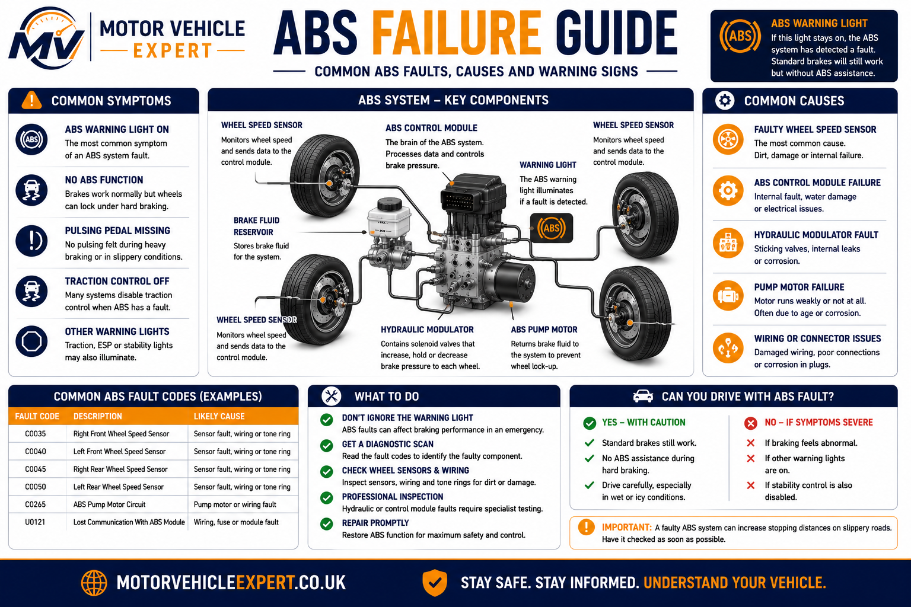
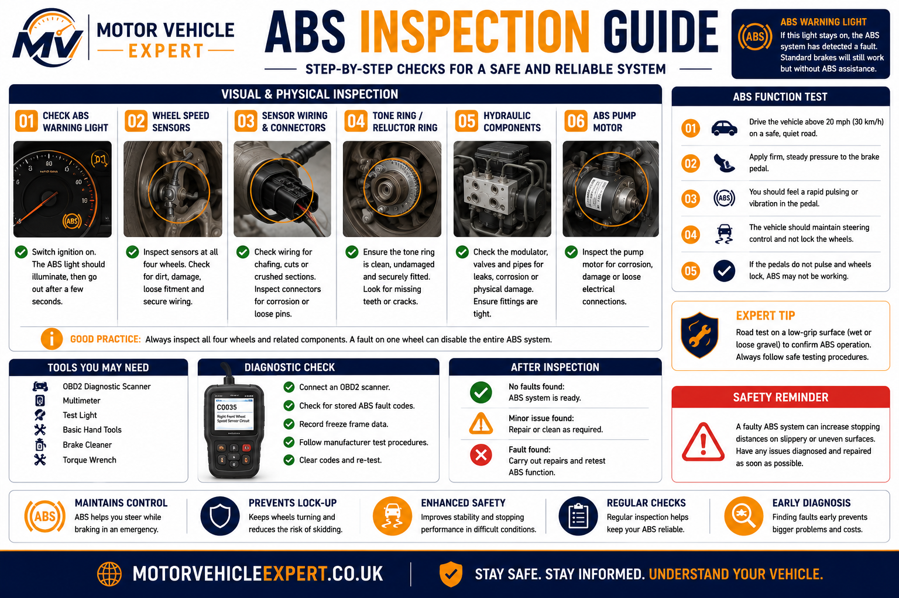

What is ABS?
ABS is an electronic braking safety system that helps stop the wheels from locking during heavy braking. When the system detects that one or more wheels are about to stop rotating, it rapidly reduces and reapplies brake pressure to that wheel so the tyre can keep gripping the road. This helps the driver maintain steering control instead of sliding in a straight line.
ABS works alongside the normal hydraulic braking system. The brake master cylinder creates hydraulic pressure, the brake fluid transfers that pressure, and the ABS hydraulic modulator adjusts pressure when wheel lock-up is detected. The system relies on wheel speed sensors, wiring, a control module, solenoid valves and an ABS pump motor.
What does ABS do?
Helps prevent wheel lock-up during heavy braking so the driver can continue steering.
What does ABS not do?
It does not replace safe tyres, good brakes, correct following distance or careful driving in poor conditions.
What is urgent?
An ABS warning light, traction warning light or repeated braking fault should be diagnosed before further long journeys.
ABS faults are often caused by sensors, wiring or tone rings rather than the complete ABS pump. A diagnostic scan and proper inspection should always be carried out before replacing expensive ABS components.
What Is ABS (Anti-lock Braking System)?
The Anti-lock Braking System (ABS) is an electronic safety system designed to prevent the wheels from locking during heavy or emergency braking. Instead of allowing one or more tyres to stop rotating completely and slide across the road surface, ABS continuously monitors wheel speed and automatically adjusts hydraulic brake pressure to each wheel whenever lock-up is detected.
Modern ABS systems work alongside every major braking component. When you press the brake pedal, the brake servo multiplies your pedal effort before the brake master cylinder converts that force into hydraulic pressure. The pressure travels through the brake pipes, brake hoses and into the brake calipers. The ABS hydraulic modulator sits within this hydraulic circuit and can instantly increase, reduce or hold brake pressure at each individual wheel whenever wheel lock-up is detected.
Unlike older braking systems that relied entirely on the driver's judgement, ABS can react many times every second. Wheel speed sensors constantly monitor the rotational speed of every wheel and send this information to the ABS Electronic Control Unit (ECU). If one wheel suddenly slows much faster than the others, indicating that it is about to lock, the ECU commands the hydraulic modulator to release pressure momentarily before reapplying it. This rapid pressure cycling is what drivers feel as the familiar brake pedal pulsation during emergency braking.
The primary purpose of ABS is not necessarily to shorten stopping distances. Its main safety benefit is allowing the driver to continue steering while braking heavily. Without ABS, locked wheels lose much of their steering ability because the tyres slide instead of rolling. By preventing wheel lock-up, ABS helps maintain directional stability, making it easier to avoid obstacles while still applying maximum braking effort.
Primary Purpose
Helps drivers maintain steering control during emergency braking by preventing wheel lock-up.
Works With
ABS enhances the hydraulic braking system rather than replacing it, operating alongside the master cylinder, calipers and brake fluid.
Electronic Control
Wheel speed sensors, the ABS ECU and hydraulic modulator work together hundreds of times every second.
ABS should never be viewed as a substitute for safe driving. Good tyres, correct tyre pressures, properly maintained brakes and sensible driving distances remain essential. ABS simply provides an additional layer of control when maximum braking is required.
ABS System Diagram
Modern Anti-lock Braking Systems combine mechanical braking components with sophisticated electronics. The diagram below illustrates the main parts that work together whenever the driver applies the brakes.

Every component shown performs a specific task. The wheel speed sensors collect rotational speed information, the tone rings provide accurate speed references, the ABS ECU processes the incoming data and the hydraulic modulator adjusts brake pressure whenever wheel lock-up is detected. Together these components allow the braking system to respond far faster than any driver could manually.
Wheel Speed Sensors
Monitor the rotational speed of each wheel and send continuous information to the ABS ECU.
Tone Rings
Precision reluctor rings create the signal required for accurate wheel speed measurement.
ABS Control Module
Processes sensor information and decides when brake pressure should be adjusted.
Hydraulic Modulator
Uses electronically controlled valves to reduce, hold or increase brake pressure.
ABS Pump Motor
Restores hydraulic pressure after the modulator has released pressure during ABS operation.
Hydraulic Braking System
Continues to provide the main braking force while ABS manages wheel lock prevention.
How ABS Works
Every time the brakes are applied, the ABS control unit compares the speed of all four wheels. During normal braking, the hydraulic system operates conventionally and ABS remains inactive. If one wheel begins to decelerate significantly faster than the others, suggesting it is about to lock, the ABS ECU immediately intervenes.
Solenoid valves inside the hydraulic modulator rapidly reduce brake pressure to the affected wheel. As the wheel begins rotating normally again, pressure is restored. This cycle can repeat many times every second until maximum braking is achieved without prolonged wheel lock-up. Drivers typically notice this as a rapid vibration or pulsing through the brake pedal, which is completely normal during ABS operation.
Because each wheel is monitored independently, ABS can adapt to changing road conditions beneath individual tyres. For example, if the left wheels are travelling over ice while the right wheels remain on dry tarmac, the system can adjust braking pressure separately for each side of the vehicle. This independent wheel control is one of the reasons modern ABS systems significantly improve vehicle stability during emergency braking.
1. Driver Applies Brakes
The brake pedal operates the brake servo and master cylinder, creating hydraulic pressure throughout the braking system.
2. Wheel Speed Monitoring
Wheel speed sensors constantly transmit rotational speed data to the ABS Electronic Control Unit (ECU), allowing it to monitor every wheel independently.
3. Lock-Up Detected
If one wheel suddenly slows much faster than the others, the ECU recognises that wheel lock-up is about to occur.
4. Pressure Released
Solenoid valves inside the hydraulic modulator briefly reduce brake pressure to the affected wheel, allowing the tyre to regain traction.
5. Pressure Restored
The ABS pump motor restores hydraulic pressure before the cycle repeats many times every second until braking is complete.
6. Driver Maintains Control
Because the wheels continue rotating instead of locking, the driver is usually able to steer around hazards while braking heavily.
Many drivers mistakenly think a vibrating brake pedal means something is broken. During emergency braking, pedal pulsation is usually a sign that ABS is working correctly. The rapid movement is caused by the hydraulic modulator repeatedly adjusting brake pressure while the pump motor restores pressure between cycles. Drivers should continue pressing the brake pedal firmly until the vehicle has stopped rather than releasing the pedal when vibration is felt.
ABS Operation Guide
Although ABS operates automatically, understanding what happens during emergency braking helps drivers react correctly when the system activates. The following guide shows the complete ABS operating sequence from the moment the brake pedal is pressed until the vehicle comes safely to a stop.

Modern ABS systems can complete this pressure adjustment cycle many times every second. Instead of allowing the wheels to remain locked, brake pressure is continually adjusted to maintain tyre grip and maximise vehicle stability under changing road conditions.
Monitor Wheel Speed
Four wheel speed sensors continuously send rotational data to the ABS ECU while the vehicle is moving.
Identify Slip
The ECU detects abnormal wheel deceleration that indicates one tyre is beginning to lock during braking.
Reduce Pressure
Hydraulic pressure is briefly reduced only at the affected wheel using electronically controlled solenoid valves.
Restore Pressure
The ABS pump motor restores hydraulic pressure so braking force can immediately increase again.
Repeat Cycle
The ECU repeats this process continuously until maximum braking has been achieved without prolonged wheel lock-up.
Vehicle Remains Stable
Steering remains possible throughout heavy braking, allowing the driver to avoid obstacles while reducing speed.
During an ABS emergency stop, press the brake pedal firmly and maintain steady pressure. Do not pump the brake pedal, as modern ABS performs this function automatically. Concentrate on steering safely around hazards while allowing the ABS to manage brake pressure.
Common ABS Problems
ABS systems are highly reliable, but because they combine electronic sensors, hydraulic components and sophisticated control software, faults can occur as vehicles age. Many ABS warning lights are caused by relatively inexpensive components such as wheel speed sensors or damaged wiring, while others involve more complex hydraulic modulator or control module failures. Correct diagnosis is therefore essential before replacing expensive parts.
Modern vehicles also integrate ABS with Traction Control (TCS), Electronic Stability Control (ESC), Hill Start Assist and Electronic Brakeforce Distribution (EBD). As a result, a single ABS fault can sometimes trigger several dashboard warning lights simultaneously.
Wheel Speed Sensor Failure
Damaged or contaminated wheel speed sensors are the most frequent cause of ABS warning lights.
Corroded Tone Ring
Rust, cracked reluctor rings or missing teeth can produce inaccurate wheel speed readings.
Damaged Wiring
Broken wiring, poor earth connections and damaged sensor connectors frequently interrupt communication with the ABS ECU.
ABS Hydraulic Modulator
Internal valve or hydraulic faults within the modulator can prevent correct brake pressure regulation.
ABS Pump Motor
Pump motor faults prevent hydraulic pressure from being restored during ABS intervention.
ABS ECU Failure
Internal electronic failures are less common but can disable ABS, traction control and stability systems simultaneously.
Never assume an illuminated ABS warning light means the ABS pump requires replacement. Professional diagnostic equipment should always be used to read stored fault codes before replacing any component. In many cases the repair is a wheel speed sensor or wiring fault rather than the hydraulic unit itself.
ABS Failure Guide
ABS failures can range from a simple wheel speed sensor fault to complex hydraulic or electronic control module problems. Unlike conventional hydraulic brake failures, most ABS faults do not remove normal braking altogether. Instead, they disable the anti-lock function, meaning the vehicle may still stop normally under everyday driving but could lose steering control during heavy emergency braking when wheel lock-up occurs.

Modern ABS systems also communicate with Electronic Stability Control (ESC), Traction Control (TCS), Hill Start Assist and Emergency Brake Assist. Because these systems share sensors and electronic control units, one ABS fault may illuminate several dashboard warning lights at the same time. Professional diagnosis should therefore always identify the root cause rather than replacing components based solely on warning lights.
ABS Warning Light
The most common indication that the ABS system has detected an electrical or hydraulic fault requiring diagnostic investigation.
Wheel Speed Sensor
Damaged sensors, contamination or broken wiring interrupt wheel speed data and disable ABS operation.
Broken Tone Ring
Corrosion, cracked reluctor rings or missing teeth produce inaccurate wheel speed signals.
Hydraulic Modulator
Internal valve faults prevent accurate brake pressure modulation during ABS intervention.
ABS Pump Motor
A failed pump motor cannot restore hydraulic pressure during repeated ABS cycling.
ABS ECU Failure
Internal ECU faults may disable ABS, traction control and stability control simultaneously.
Never ignore an ABS warning light simply because the vehicle still brakes normally. While standard hydraulic braking often remains operational, emergency braking performance and steering control can be significantly reduced on wet or slippery roads.
ABS Inspection Guide
Diagnosing ABS faults requires far more than reading dashboard warning lights. Modern diagnostic procedures combine electronic fault-code analysis with physical inspection of the braking system, wheel speed sensors, reluctor rings, hydraulic components and electrical wiring. This systematic approach prevents unnecessary replacement of expensive ABS pumps or control modules.

Most professional workshops begin with a diagnostic scan capable of communicating directly with the ABS Electronic Control Unit. Stored Diagnostic Trouble Codes (DTCs) identify the affected circuit, allowing technicians to confirm whether the fault originates from a wheel speed sensor, hydraulic modulator, pump motor, electrical wiring or the ABS ECU itself.
Diagnostic Scan
Reads manufacturer-specific ABS fault codes and live wheel speed data.
Wheel Speed Sensors
Sensors are checked for contamination, corrosion, damage and secure mounting.
Tone Rings
Reluctor rings are inspected for cracks, missing teeth and corrosion that could affect sensor readings.
Electrical Wiring
Harnesses and connectors are tested for broken wires, corrosion and poor electrical connections.
Hydraulic Modulator
Diagnostic equipment confirms that the hydraulic valves and pump motor respond correctly.
Road Test
Live data confirms correct wheel speed readings and proper ABS operation under controlled braking.
Replacing ABS components without diagnostic testing often leads to unnecessary expense. A professional diagnosis should always confirm the exact failed component before replacement, especially where hydraulic modulators or ABS control modules are involved.
Can ABS Components Be Repaired Or Must They Be Replaced?
One of the biggest misconceptions surrounding Anti-lock Braking Systems is that an illuminated ABS warning light automatically means the complete ABS unit requires replacement. In reality, most ABS faults originate from relatively small components such as wheel speed sensors, damaged wiring, corroded reluctor rings or poor electrical connections. Accurate diagnosis is therefore the most important part of any ABS repair because replacing expensive hydraulic units or control modules without confirming the fault can waste hundreds of pounds.
A modern ABS system combines electronic, hydraulic and mechanical components into one integrated safety system. Each part performs a different function and each has its own failure characteristics. Some components are inexpensive and straightforward to replace, while others require specialist programming after installation. Understanding which parts can normally be repaired and which usually require complete replacement helps vehicle owners make informed repair decisions.
Professional workshops begin by connecting manufacturer-compatible diagnostic equipment capable of communicating with the ABS Electronic Control Unit. Unlike a basic engine code reader, a professional scanner can access live wheel speed data, hydraulic pump tests, valve activation tests and manufacturer-specific Diagnostic Trouble Codes (DTCs). These tests identify whether the fault is electrical, hydraulic or mechanical before any parts are removed.
Wheel speed sensors remain the most common ABS repair carried out in UK workshops. Positioned close to each wheel bearing or hub assembly, these sensors operate in harsh conditions where road salt, moisture, brake dust and stone impacts gradually take their toll. A contaminated sensor may simply require cleaning, whereas damaged wiring or failed internal electronics usually require replacement. Fortunately, wheel speed sensors are generally among the least expensive ABS components to repair.
Tone rings, also known as reluctor rings, should always be inspected whenever a wheel speed sensor fault is diagnosed. Rust expansion, cracked rings or missing teeth alter the magnetic signal reaching the sensor, causing incorrect wheel speed readings even though the sensor itself remains fully functional. On some vehicles the reluctor ring can be replaced independently, while others require replacement of the complete driveshaft, wheel bearing or hub assembly because the ring forms part of those components.
Wiring faults are another common cause of ABS warning lights. Harnesses positioned close to suspension arms, steering components and wheel arches experience constant movement, vibration and exposure to water. Broken wires inside the insulation, corroded connectors or damaged plugs can interrupt communication between the wheel speed sensor and the ABS ECU. Skilled technicians often repair these faults by replacing damaged wiring sections or connectors rather than replacing the sensor unnecessarily.
Hydraulic modulators are considerably more expensive than sensors because they contain precision solenoid valves responsible for controlling brake pressure during ABS intervention. Internal contamination, sticking valves or hydraulic damage generally require replacement or specialist remanufacturing. Because these units directly influence brake pressure, replacement should always be followed by correct bleeding procedures and manufacturer-approved calibration where required.
The ABS pump motor is responsible for restoring hydraulic pressure after the modulator has released pressure during ABS operation. Pump failures are much less common than sensor faults but can occur through electrical wear, corrosion or internal mechanical failure. Some vehicles allow separate pump replacement, while others integrate the pump with the hydraulic modulator, requiring the complete assembly to be replaced.
ABS Electronic Control Units (ECUs) are highly reliable, but age, vibration, moisture ingress and solder joint failure can eventually cause internal faults. Many specialist companies now offer professional ECU testing and remanufacturing services, providing a cost-effective alternative to purchasing a brand-new unit. However, replacement control modules frequently require coding or programming using manufacturer diagnostic software before they can communicate correctly with the vehicle's braking, traction control and stability systems.
Used ABS modules are widely available, but they should be approached cautiously. Even if the part number matches, software versions, vehicle specifications and coding requirements may differ. Reconditioned units supplied by reputable specialists often provide a better balance between cost, reliability and warranty support than untested second-hand components removed from salvage vehicles.
After any ABS repair, technicians should carry out a complete verification procedure. This includes clearing stored fault codes, checking live wheel speed readings from all four sensors, confirming hydraulic operation, performing controlled road testing and ensuring that the ABS, traction control and stability control warning lights remain extinguished. Simply replacing a component without confirming correct system operation leaves uncertainty over whether the underlying fault has truly been resolved.
Components Often Repaired
- ✓Wheel speed sensors
- ✓Sensor wiring repairs
- ✓Electrical connectors
- ✓Tone (reluctor) rings
- ✓Vacuum-independent electrical faults
Components Often Replaced
- ✓Hydraulic modulators
- ✓ABS pump assemblies
- ✓Failed ABS ECUs
- ✓Integrated hydraulic units
- ✓Severely corroded hub assemblies
Wheel Speed Sensor
The most common and generally the least expensive ABS repair carried out in UK workshops.
Tone Ring
Some reluctor rings are replaceable individually while others require hub or driveshaft replacement.
Electrical Wiring
Wiring faults should always be repaired before replacing expensive electronic components.
ABS Pump
Pump failures usually require replacement or specialist remanufacturing depending on vehicle design.
Hydraulic Modulator
Internal hydraulic valve faults normally require replacement or professional rebuilding.
ABS ECU
Replacement control modules frequently require coding before the braking system operates correctly.
The most expensive ABS repair is often the one carried out without proper diagnosis. Always insist on a full diagnostic report confirming the failed component before authorising replacement of hydraulic modulators, ABS pumps or electronic control modules. Many ABS warning lights are ultimately traced to inexpensive wheel speed sensors or wiring faults rather than complete ABS unit failure.
ABS And The UK MOT Test
Anti-lock Braking Systems form part of the vehicle's overall braking safety system and are assessed during the MOT where ABS is fitted as original equipment. While an MOT tester does not dismantle the ABS hydraulic unit or perform advanced electronic diagnostics, the inspection follows the DVSA MOT Inspection Manual by checking that the system appears to operate correctly, that required warning lamps behave as expected and that no obvious defects are present which could affect braking safety.
The inspection begins before the vehicle even moves onto the brake rollers. During the dashboard lamp check the tester confirms that the ABS warning lamp illuminates during the ignition self-test before extinguishing correctly. If the warning lamp remains illuminated, indicates an ABS malfunction or clearly shows the anti-lock braking system is inoperative, the vehicle will normally fail the MOT because an important safety system is no longer functioning correctly.
During the remainder of the inspection, testers assess the braking system as a whole rather than concentrating solely on the electronic components. Brake performance, pedal feel, hydraulic integrity, brake pipe condition, brake hose condition and braking efficiency are all considered together. Although ABS itself is electronic, its operation depends entirely upon a healthy hydraulic braking system, making routine servicing of brake fluid, brake pipes, hoses, calipers and the master cylinder just as important as maintaining the electronic control system.
Modern vehicles frequently combine ABS with Electronic Stability Control (ESC), Traction Control (TCS), Emergency Brake Assist (EBA) and Electronic Brakeforce Distribution (EBD). Depending on vehicle design, faults affecting shared wheel speed sensors or the ABS control module may illuminate several dashboard warning lamps simultaneously. A professional diagnostic inspection should always determine the root cause before individual components are replaced.
Pass
ABS warning lamp performs its normal self-test, no braking defects are identified and braking performance meets MOT standards.
Possible Advisory
Related braking components showing early wear may receive advisories even where the ABS itself is operating correctly.
Fail
An illuminated ABS warning lamp, significant braking defect or related safety fault can result in MOT failure.
Never clear an ABS warning light immediately before an MOT without repairing the underlying fault. Modern ABS systems store diagnostic trouble codes and the warning lamp will usually return if the original fault remains present.
Typical ABS Repair Costs UK
ABS repair costs vary considerably depending on which component has failed. Most repairs involve relatively inexpensive wheel speed sensors or wiring faults, while hydraulic modulators, ABS pumps and electronic control modules are among the most expensive braking components fitted to modern vehicles. These guide prices represent broad UK estimates and should be used for budgeting rather than fixed quotations.
Wheel Speed Sensor
£90–£220Includes sensor replacement and basic labour on most passenger vehicles.
Tone Ring / Reluctor Ring
£120–£300Costs vary depending on whether the reluctor ring is replaceable separately or forms part of the hub or driveshaft.
ABS Wiring Repair
£80–£250Broken wires, damaged connectors and corroded terminals can often be repaired without replacing sensors.
ABS Hydraulic Modulator
£500–£1,200+One of the most expensive ABS components because of its precision hydraulic valves.
ABS Pump Motor
£350–£900Some pump motors are replaceable separately while others form part of the hydraulic unit.
ABS Control Module (ECU)
£450–£1,000+Costs depend on whether the ECU is repaired, remanufactured or replaced with a new unit.
Programming & Coding
£60–£180Many replacement ABS modules require coding before communicating correctly with the vehicle.
Diagnostic Scan
£50–£120A professional diagnostic scan often prevents unnecessary replacement of expensive ABS components.
Complete ABS System Repair
£800–£2,000+Complex repairs involving hydraulic, electrical and electronic components can become significant.
Always authorise a professional diagnostic scan before agreeing to major ABS repairs. Many warning lights are caused by inexpensive wheel speed sensors or wiring rather than hydraulic modulators or ABS control modules.
Used Car Buying Checks
ABS repairs can range from relatively inexpensive sensor replacements to major hydraulic and electronic repairs costing well over £1,000. For this reason, the anti-lock braking system deserves careful attention whenever purchasing a used vehicle. A few simple checks can reveal problems before money changes hands.
Dashboard Self-Test
Turn on the ignition and confirm the ABS warning lamp illuminates before going out normally.
Road Test
Ensure no ABS, traction control or stability control warning lights appear during normal driving.
Wheel Hubs
Inspect for damaged sensor wiring, corrosion around reluctor rings and previous poor-quality repairs.
MOT History
Look for repeated ABS-related advisories or braking defects recorded during previous MOT tests.
Diagnostic Scan
A pre-purchase diagnostic scan can identify stored ABS fault codes even when warning lights are not currently illuminated.
Brake System Condition
Assess brake discs, pads, calipers, brake pipes, brake hoses and fluid because ABS relies on a healthy hydraulic braking system.
Never accept an explanation that an ABS warning light is "just a sensor" without supporting diagnostic evidence. Some faults are inexpensive, while others involve hydraulic modulators or control modules costing many hundreds of pounds.
ABS FAQs
What does ABS do?
ABS helps prevent the wheels from locking during heavy braking. This helps the driver maintain steering control while braking on slippery, wet or uneven road surfaces.
What does the ABS warning light mean?
The ABS warning light means the anti-lock braking system has detected a fault. Standard braking may still work, but ABS assistance may be disabled until the fault is diagnosed and repaired.
Can ABS fail an MOT?
Yes. An illuminated ABS warning light, ABS malfunction or related safety system fault can cause an MOT failure if the system is fitted and not operating correctly.
Can you drive with the ABS light on?
Standard brakes may still work, but ABS may not assist during emergency braking. The vehicle should be diagnosed and repaired as soon as possible, especially before driving in poor weather.
What are common ABS faults?
Common ABS faults include failed wheel speed sensors, damaged wiring, corroded tone rings, faulty ABS control modules, hydraulic modulator faults, pump motor issues and low battery voltage.
How much does ABS repair cost in the UK?
ABS repair costs vary widely. A wheel speed sensor may cost around £120 to £250 fitted, while ABS pump or control module repairs can cost several hundred pounds or more depending on the vehicle.
Why does the brake pedal pulse when ABS works?
Pedal pulsing during hard braking is normal ABS operation. The system rapidly reduces and reapplies brake pressure to help prevent wheel lock-up.
Does ABS reduce stopping distance?
ABS is mainly designed to help maintain steering control during heavy braking. It can reduce stopping distances on some surfaces, but on loose gravel, snow or ice stopping distance may not always be shorter.
Can a weak battery cause ABS faults?
Yes. Low battery voltage or charging system problems can trigger ABS and stability control warning lights because the system depends on stable electrical power.
Is ABS the same as traction control?
No. ABS helps prevent wheel lock-up during braking, while traction control helps reduce wheel spin during acceleration. However, both systems often share wheel speed sensors and control modules.
Can ABS faults affect stability control?
Yes. Many stability control and traction control systems rely on ABS sensors and the ABS control module, so one ABS fault can disable multiple electronic safety systems.
Should ABS faults be repaired before buying a used car?
Yes. An ABS warning light or stored ABS fault should be diagnosed before purchase because repair costs can range from a simple sensor replacement to an expensive ABS module or pump repair.
Related Brake Guides
ABS works alongside every major component of the braking system. Continue exploring the Motor Vehicle Expert braking knowledge cluster to understand how hydraulic braking, electronic safety systems and MOT requirements all work together.
Disc Brakes Explained
Learn how complete disc braking systems generate stopping power.
Read GuideBrake Pads Explained
Understand brake pad materials, wear patterns and replacement intervals.
Read GuideBrake Discs Explained
Learn how brake discs dissipate heat and provide reliable stopping power.
Read GuideBrake Calipers Explained
Discover how hydraulic pressure is converted into braking force.
Read GuideBrake Fluid Explained
Learn why clean brake fluid is essential for braking performance and ABS operation.
Read GuideBrake Pipes Explained
Understand the rigid hydraulic lines that carry brake fluid throughout the braking system.
Read GuideBrake Hoses Explained
Learn how flexible brake hoses connect the hydraulic system to each wheel.
Read GuideBrake Master Cylinder Explained
Discover how hydraulic braking pressure is generated and distributed throughout the system.
Read GuideBrake Servo Explained
Learn how vacuum assistance reduces brake pedal effort while improving braking performance.
Read GuideCar Fails MOT On Brakes
Understand common brake-related MOT failures, repair advice and DVSA inspection standards.
Read GuideMost Common MOT Advisories Explained
Learn how common MOT advisories develop into future failures and repair costs.
Read GuideFinal Thoughts
Anti-lock Braking Systems have transformed vehicle safety by allowing drivers to maintain steering control during heavy braking. While ABS does not replace careful driving, good tyres or a properly maintained hydraulic braking system, it provides an important additional layer of protection during emergency situations.
Most ABS faults begin with relatively simple problems such as damaged wheel speed sensors, corroded tone rings or wiring faults. Professional diagnosis is therefore essential before replacing expensive hydraulic modulators or electronic control units. Keeping the braking system serviced, responding quickly to warning lights and maintaining the complete hydraulic braking system will help ensure ABS performs exactly as intended when you need it most.
If the ABS warning light remains illuminated, don't ignore it. Your normal brakes may still work, but the anti-lock function designed to help you maintain steering control during emergency braking may no longer be available.
About This Guide
This guide forms part of the Motor Vehicle Expert Braking System Knowledge Cluster, a comprehensive educational series explaining how modern braking systems operate. Each guide is written for UK drivers, learners and used car buyers using practical workshop knowledge, current DVSA guidance and modern vehicle technology.
The information is intended for educational purposes and should never replace a professional inspection where braking faults are suspected. Because ABS works together with the brake servo, master cylinder, hydraulic brake system and electronic stability systems, any warning light or abnormal braking behaviour should be investigated before further driving.